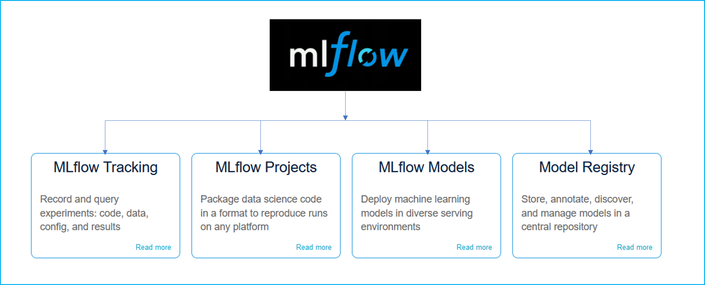
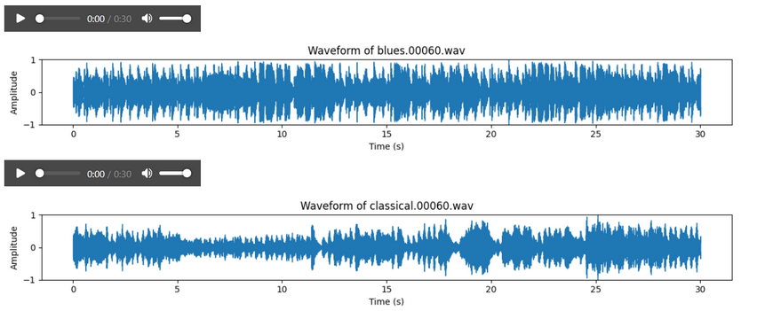

This end-to-end project features a web application hosted on Render, allowing users to input data through a frontend interface and receive used car price predictions powered by machine learning algorithms. The backend includes a custom-built data loader, data processor, and model builder, along with a prediction pipeline, training pipeline, custom logging, and exception handling.
This end-to-end project features a web application hosted on Render, allowing users to input data through a frontend interface and receive used car price predictions powered by machine learning algorithms. The backend includes a custom-built data loader, data processor, and model builder, along with a prediction pipeline, training pipeline, custom logging, and exception handling.
This end-to-end project features a web application hosted on Render, allowing users to input data through a frontend interface and receive used car price predictions powered by machine learning algorithms. The backend includes a custom-built data loader, data processor, and model builder, along with a prediction pipeline, training pipeline, custom logging, and exception handling.
This app enables users to upload an image of a lemon leaf and receive a classification of the leaf into one of the following categories:
Anthracnose,
Bacterial Blight,
Citrus Canker,
Curl Virus,
Deficiency Leaf,
Dry Leaf,
Healthy Leaf,
Sooty Mould,
Spider Mites.
With an accuracy rate of 96.8%, the app utilizes deep learning to analyze leaf images, providing quick and accurate disease identification.
Fully functional website was developed using HTML, integrated with a FastAPI backend, to predict the compressive strength of concrete. The prediction model is powered by artificial neural networks (ANN) and was deployed using Docker

Experiments were conducted with different runs, utilizing all four MLflow components—Tracking, Projects, Models, and Registry—to select the best run and pickle the model.

Tableau Dashboard are to be found here,sheets are grouped by dashboard, identified by numbers (1,2,3,4). Unfortunately, Tableau Public only allows individual sheet uploads, not full dashboards, making navigation less intuitive. The available dashboards are:
American Flight Industry Context & Flight Cancellations (2023)
Suicide Rate Analysis (1985–2016)
World Happiness Report vs. Suicide Rates
Artistic Insight: Museums, Paintings & Artists Across Eras
This project focuses on text classification for an e-commerce dataset, categorizing products into four main classes: "Electronics," "Household," "Books," and "Clothing & Accessories." These categories cover around 80% of typical e-commerce offerings.The model performs exceptionally well, even on imbalanced data, achieving an overall accuracy of 0.964. Class-specific accuracies are also consistent, ranging from 0.948 to 0.986.
The performance of the model with 500 epochs is really good. To break it down:
Precission: 0,796
Recall: 0,911
mAP50: 0,979 which is excellent considering that the dataset only has 240 pictures and 17 classes. This metric means represent the accuracy with a 50% threshold.
mAP50-95 is 0.648 (the model has some difficulty with precise bounding box predictions at higher thresholds, which is expected)
By analyzing historical claim data, various features such as claim amount, vehicle details, customer information, and accident history were used to train a classifier to differentiate between legitimate and fraudulent claims.

Predicting genres in unknown data achieves 64.4% accuracy. Accuracy varies across genres despite the balanced dataset (100 samples each). Notably, classical reaches 100%, likely due to its distinctive melodies.
It classifies waste into nine categories: household waste, electronics, clothing, glass, plastics, paper, organic waste, batteries, and hazardous materials. The primary motivation behind this initiative is to teach expats who are new to Germany how to correctly sort their trash, as the recycling system can be quite complex.

Predicting Event Count over time is key to better planning, smarter resource allocation, and informed decision-making. Accurate forecasts help organizations stay ahead by spotting trends, optimizing resources, and catching unexpected changes. Using advanced models like XGBoost and Prophet, this project aims to provide valuable insights that improve operations and create real impact.

It allows users to upload multiple PDFs and ask questions about their content. It uses a language model to generate answers but is not designed for open-ended conversations, so it may not respond to greetings or engage in complex reasoning.
For more natural interactions, a more powerful GPU (which speeds up processing of the FLAN-T5-large model on HuggingFaceHub) or access to premium models like OpenAI’s is required. Upgrading to GPT-4, combined with a GPU, would enhance performance, enabling more complex and human-like responses. Currently, the FLAN-T5-large model on a CPU may limit performance. Using a GPU or OpenAI’s advanced models improves both processing speed and language understanding.Accessing a GPU and OpenAI’s models requires payment. Once paid, adapting the provided code for use with these resources would be straightforward, offering improved performance and the ability to handle more sophisticated queries.

Web application that uses a Llama model to generate blogs tailored to user input. The app allows users to specify the number of words they want in the blog, choose the language for the content, and input SEO keywords to optimize the blog for search engines. Once the user provides the desired parameters, the app generates a blog post that can be read directly on the website. Additionally, users have the option to listen to the blog via an integrated audio feature, making it more interactive and accessible.
This project analyzes 10,000 customer reviews from 100 restaurants to classify sentiment and gauge customer satisfaction. Three models—VADER, RoBERTa, and BERT—were used to assess sentiment with varying approaches. The insights gained help identify trends in customer satisfaction, highlighting strengths and areas for improvement in restaurant service.
This project aims to predict whether an individual earns more or less than $50,000 annually based on demographic and socioeconomic factors. By analyzing features like age, education, occupation, and marital status, it identifies key determinants of income. Three different Logistic Regression models were used to develop a predictive framework, providing insights into income disparities and supporting informed decision-making.
This project aims to develop a machine learning model to predict user ratings of Google Play apps based on various features. By analyzing factors like app category, size, price, and user feedback, it identifies key influences on ratings. Models tested include Linear Regression, Decision Tree Regressor, Random Forest Regressor, and Support Vector Machine. The insights gained help developers and stakeholders improve app quality and user satisfaction.
This project aims to develop a customer segmentation model for approximately 9,000 active credit card holders based on their behavioral patterns over the last six months. By analyzing 18 key variables, including spending habits, payment behavior, and credit usage, it identifies distinct customer segments. Five models, including K-Means and Agglomerative Clustering, were developed to refine segmentation. These insights help optimize targeted marketing, enhance customer satisfaction, and drive business growth.